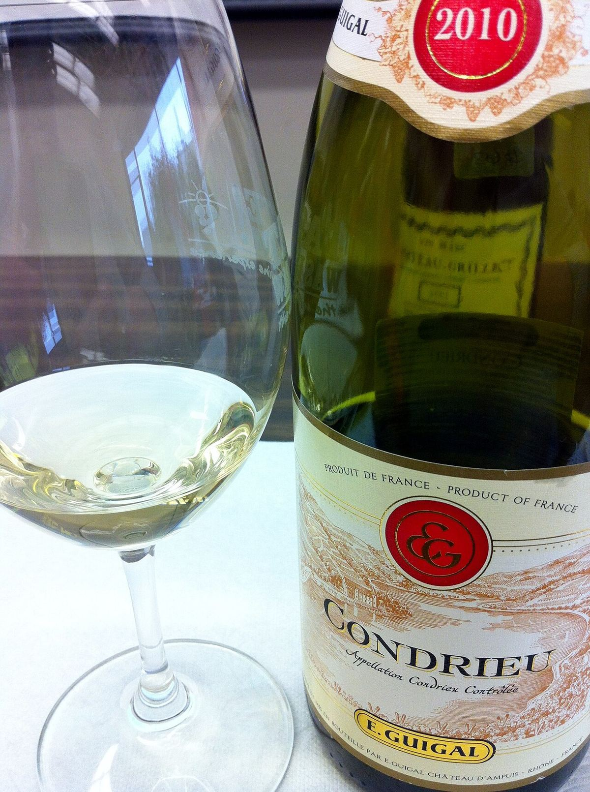

E. Guigal Condrieu
Il Condrieu di Guigal, un bianco secco di Viognier della denominazione del Rodano settentrionale che è la culla di questa varietà.

Condrieu, appena a sud della Côte-Rôtie, è la denominazione di riferimento per il Viognier, una varietà bianca molto aromatica che rischiò di scomparire a metà Novecento e si è poi diffusa in molte regioni del mondo. I suoi vigneti occupano ripidi pendii granitici sopra il Rodano.
Il Condrieu di Guigal si ottiene esclusivamente da Viognier. Una parte del vino fermenta e affina in barrique nuove di rovere e un’altra in vasca, combinazione che mira ad aggiungere struttura senza coprire l’aroma della varietà.
È un bianco secco, ampio e molto profumato, di acidità moderata, che di solito si gusta nei primi anni per apprezzarne appieno l’espressione aromatica.
La denominazione è piccola e la produzione limitata, il che spiega perché il Condrieu sia un vino relativamente raro.
Profilo di degustazione
Giallo dorato. Aromi intensi di albicocca, pesca, fiori bianchi come l’acacia e note di spezie delicate. In bocca è ampio, untuoso e secco, con finale aromatico.
Abbinamenti
Cucina asiatica delicata, curry di pollo, gamberoni, pesce in salsa, formaggi di capra
Servizio
11-13 °C, ampio calice da vino bianco